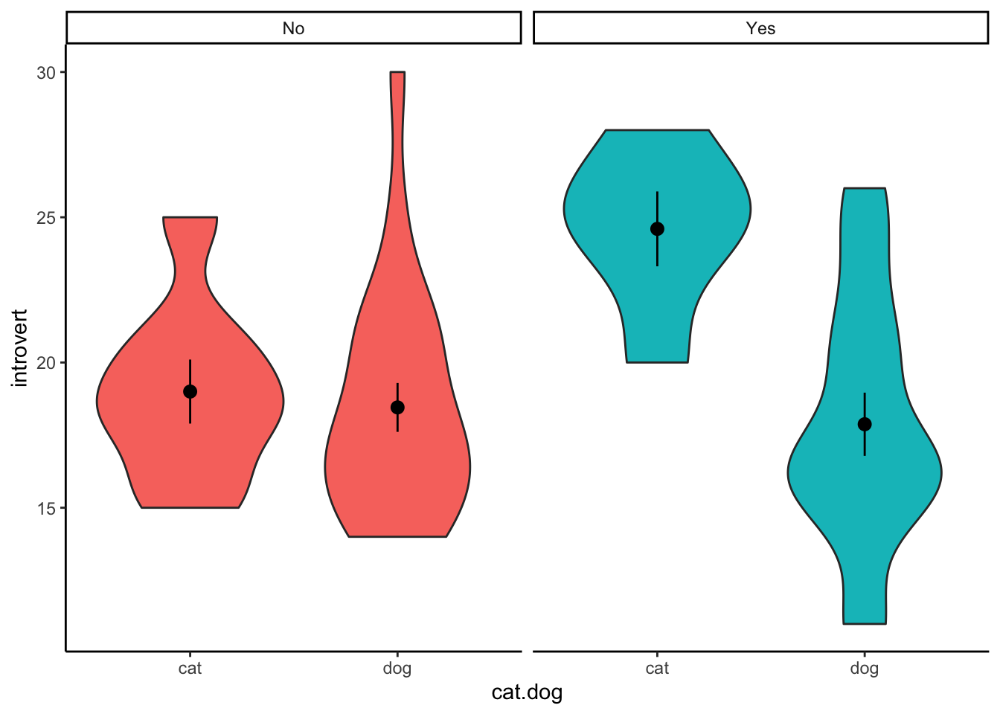

Content
Before we begin…
Remember, whenever we analyse data, we will roughly be following this procedure:
- Clean the data for analysis.
- Run the statistical test.
- Plot the data.
- Write-up analysis.
We will be using the following packages. If this is your first time using these packages, remember to install them before loading the packages.
library(tidyverse)
library(lm.beta)Reminder: Moderation (Interaction Effects)
As covered in the Lecture series, moderation is when the effect of an IV (predictor) on the DV (outcome) depends on another IV (predictor). We can test for an interaction effect in a linear regression.
In the example below, we will extend the regression we conducted last week and test the hypothesis that the association between sleep quality and stress is moderated by social support (for instance, the relationship between sleep quality and stress is more negative for participants low in social support).
Regression with Interaction Effect
1. Clean the data for analysis.
First we must calculate the scores for each scale in the analysis from the individual items. As we have done previously, we can do this by using the mutate() function. The code below is the same as the code we used last week.
data1.vars <- data %>%
mutate(stress = stress.1 + stress.2 + stress.3 + stress.4 + stress.5,
support = support.1 + support.2 + support.3 + support.4 + support.5,
sleep.quality = sleep1 + sleep2 + sleep3 + sleep4 + sleep5) %>%
dplyr::select(student.no,stress,support,sleep.quality)When including interaction terms in a linear regression, including uncentered variables can be problematic. In order to center the variables, we can use the scale() function. The scale() function expects a numeric vector. There are two additional arguments called center and scale. If center is set to TRUE, but scale is set to FALSE, the scale() function will output the ‘centred’ variable. If both arguments are set to TRUE, the scale() function will return a ‘standardised’ argument.
Because of a quirk with the scale() function, we also need to tell R that the output is a vector. We can do this by wrapping the results from the scale() function inside a c() function.
You can see the scale() function in action below:
v <- c(3,32,5,6,12,59,96)
#Get the centered variable.
c.v <- c(scale(v,center = TRUE,scale = FALSE))
c.v## [1] -27.428571 1.571429 -25.428571 -24.428571 -18.428571 28.571429
## [7] 65.571429#Get the standardised variable.
z.v <- scale(v, center = TRUE,scale = TRUE) %>% as.vector()
z.v## [1] -0.7782022 0.0445845 -0.7214583 -0.6930863 -0.5228546 0.8106273
## [7] 1.8603896We can use this combination of the scale() and c() functions within the mutate() to calculate the standardised/centred variables of columns in our data.frame:
#Compute centred variables for analysis.
data1.clean <- mutate(data1.vars,
c.stress = c(scale(stress,center = TRUE,scale = FALSE)),
c.support = c(scale(support,center = TRUE,scale = FALSE))) %>%
#Compute standardised variables.
mutate(z.sleep.quality = c(scale(sleep.quality,center = TRUE,scale = TRUE)),
z.support = c(scale(support,center = TRUE,scale = TRUE)),
z.stress = c(scale(stress,center = TRUE,scale = TRUE)))2. Run statistical test
Recall that interaction effects are the multiplication of the two variable. Therefore, to specify an interaction, we change the formula we specify to include the multiplication of the variable whose interaction we are interested in. For the unstandardised model, make sure you include the centred variables in the formula.
#Unstandardised Model
model1 <- lm(sleep.quality ~ c.stress*c.support,data = data1.clean)
summary(model1)##
## Call:
## lm(formula = sleep.quality ~ c.stress * c.support, data = data1.clean)
##
## Residuals:
## Min 1Q Median 3Q Max
## -7.9410 -1.8632 -0.1277 2.2191 6.3794
##
## Coefficients:
## Estimate Std. Error t value Pr(>|t|)
## (Intercept) 14.811938 0.392308 37.756 <2e-16 ***
## c.stress -0.188055 0.119188 -1.578 0.120
## c.support 0.036933 0.096790 0.382 0.704
## c.stress:c.support -0.008153 0.029197 -0.279 0.781
## ---
## Signif. codes: 0 '***' 0.001 '**' 0.01 '*' 0.05 '.' 0.1 ' ' 1
##
## Residual standard error: 3.036 on 56 degrees of freedom
## Multiple R-squared: 0.04589, Adjusted R-squared: -0.005224
## F-statistic: 0.8978 on 3 and 56 DF, p-value: 0.4481Notice how R automatically includes the main effects in the model? In most cases, you will want to include the separate main effects when including an interaction term, but in the odd occassion when you want to include the interaction effect without the main effect, you can specify it using the : symbol. In other words:
stress ~ stars.test*support is identical to stress ~ stars.test + support + stars.test:support
Above are the unstandardised coefficients. However, in order to report in APA format, we require the standardised coefficient. Similar to with an ordinary regression, we can use the lm.beta() function to get the standardised coefficients, like here:
#Standardised Model
model1 %>%
lm.beta() %>%
summary()##
## Call:
## lm(formula = sleep.quality ~ c.stress * c.support, data = data1.clean)
##
## Residuals:
## Min 1Q Median 3Q Max
## -7.9410 -1.8632 -0.1277 2.2191 6.3794
##
## Coefficients:
## Estimate Standardized Std. Error t value Pr(>|t|)
## (Intercept) 14.811938 0.000000 0.392308 37.756 <2e-16 ***
## c.stress -0.188055 -0.207462 0.119188 -1.578 0.120
## c.support 0.036933 0.049882 0.096790 0.382 0.704
## c.stress:c.support -0.008153 -0.036708 0.029197 -0.279 0.781
## ---
## Signif. codes: 0 '***' 0.001 '**' 0.01 '*' 0.05 '.' 0.1 ' ' 1
##
## Residual standard error: 3.036 on 56 degrees of freedom
## Multiple R-squared: 0.04589, Adjusted R-squared: -0.005224
## F-statistic: 0.8978 on 3 and 56 DF, p-value: 0.44813. Plot data
Interactions can often be difficult to intuit from just looking at the numbers in the model. Therefore, it is almost always necessary to plot them. The most common way to plot an interaction is to split the dataset in two according to the moderator: one with participants who score above the mean on the moderator, and the other with participants who score below the mean on the moderator. In our example, this means splitting the data into participants who are above and below the mean in social support. We can do this by creating a new variable using the ifelse() function within the mutate() function.
The ifelse() function works by first specify a condition as the first argument. The second argument is what happens if data from a participant meets that condition. The third arguement is what happens if a participant does not meet that condition. So in the code below, we are creating a new variable called ‘cat.support’. We want to categorise support into two levels, so the condition in the ifelse() function is z.support > 0. Since we standardised the moderator during the cleaning scale. The mean for support equals 0, so we can split the data on this. Participants who meet this condition are in the “high support” group, while those that are not are in the “low support” group.
plot.data <- mutate(data1.clean,cat.support = ifelse(z.support > 0,"high support","low support")) %>%
filter(!is.na(cat.support))We then can plot the regression line adding in a ‘group’ and ‘colour’ aesthetic to separate our data of participants with high and low support.
ggplot(plot.data,mapping = aes(x = stress,y = sleep.quality,group = cat.support,colour = cat.support)) +
geom_smooth(method = "lm") +
theme_classic()
Even better is if can visualise the raw data in a scatterplot:
ggplot(plot.data,mapping = aes(x = stress,y = sleep.quality,group = cat.support,colour = cat.support)) +
geom_smooth(method = "lm") +
geom_point() +
theme_classic()
4. Write-up analysis.
Given that a moderation is exactly the same as a regression, we require the same information to do the write-up. As a reminder, here are the components you need to write up a regression:
For the model, you need the following information:
- the R-squared statistic.
- the F-statistic and associated degrees of freedom.
- the p-value for the model.
For each predictor, you need the following information:
- the standardised coefficient.
- the t-statistic.
- the p-value for that coefficient.
As mentioned last week, with more than one predictor in the model, it may make more sense to report the statistics in a table. This includes models with interaction effects (in the case above, the interaction effect is our third predictor).
Here is an example of the write-up:
We used a linear regression to predict sleep quality from the level of perceived stress, level of social support, and the interaction between the two. We found that model explained 4.59% of the variance (F(3,56) = 0.9, p = 0.448). Regression coefficients are reported in Table 1. There was a significant, negative main effect of stress on sleep quality. There was no significant main effect of social support on sleep quality. The interaction between perceived stress and social support was significant, such that… [go on to describe the pattern of results]
Table 1. Regression coefficients for linear model predicting stress.
| predictor | beta | t | p-value |
|---|---|---|---|
| Perceived Stress | -0.21 | -1.58 | 0.12 |
| Social Support | 0.05 | 0.38 | 0.704 |
| PS * SS | -0.04 | -0.28 | 0.781 |
Two-Way ANOVA
A two-way ANOVA is used when you want to evaluate the effects of two categorical IVs on a continuous DV. Much of what we have covered regarding a linear regression with multiple predictors applies with a two-way ANOVA, but with two categorical IVs. In the example below, we will test whether there is an association between between sleep quality and playing video games, and whether this association differs depending on whether you are a cat person or dog person.
1. Clean the data for analysis.
clean.data2 <- data %>%
filter(cat.dog != "both") %>%
filter(cat.dog != "neither") %>%
filter(cat.dog != "") %>%
mutate(sleep.quality = sleep1 + sleep2 + sleep3 + sleep4 + sleep5) %>%
select(sleep.quality,video.games,cat.dog)2. Run statistical test
The function to run a two-way ANOVA is the same as a one-way ANOVA: aov(). R is smart enough to determine which statistical test to run based on how many IVs are in the formula. The formula works the same as an interaction in a regression, where both categorical IVs are “multiplied” together. R will automatically include the main effects for each IV and the interaction. Also, similar to the one-way ANOVA, in order to get output that is interpretable, you can pipe the result to the summary() function.
aov(sleep.quality ~ video.games*cat.dog,data = clean.data2) %>%
summary()## Df Sum Sq Mean Sq F value Pr(>F)
## video.games 1 1.3 1.274 0.126 0.724
## cat.dog 1 6.1 6.088 0.604 0.441
## video.games:cat.dog 1 1.3 1.321 0.131 0.719
## Residuals 42 423.1 10.075Similar to a one-way ANOVA, the two-way ANOVA will tell you whether or not there is a difference, but it will not tell you where that difference is. In order to determine this, you will need to calculate summary statistics (e.g., means for each cell) and conduct follow-up comparisons.
Calculate Summary Statistics
clean.data2 %>%
group_by(video.games,cat.dog) %>%
summarise(
count = n(),
mean = mean(sleep.quality,na.rm = TRUE),
sd = sd(sleep.quality,na.rm = TRUE)
)## # A tibble: 4 x 5
## # Groups: video.games [2]
## video.games cat.dog count mean sd
## <chr> <chr> <int> <dbl> <dbl>
## 1 No cat 8 15.6 1.85
## 2 No dog 9 14.4 2.60
## 3 Yes cat 18 14.8 3.33
## 4 Yes dog 11 14.4 3.96Multiple Comparisons
In the ANOVA table above, we do not find a significant interaction between playing video games and being a cat or dog person. However, we will conduct the comparisons below to determine as if there were a significant interaction. To assess the significant interaction, we test whether the difference between video gamers and non-video gamers differs depending on whether they are a cat or dog person.
t.test(sleep.quality ~ cat.dog,data = filter(clean.data2,video.games == "Yes" & (cat.dog == "cat" | cat.dog == "dog")))##
## Welch Two Sample t-test
##
## data: sleep.quality by cat.dog
## t = 0.32892, df = 18.493, p-value = 0.7459
## alternative hypothesis: true difference in means is not equal to 0
## 95 percent confidence interval:
## -2.524679 3.464073
## sample estimates:
## mean in group cat mean in group dog
## 14.83333 14.36364t.test(sleep.quality ~ cat.dog,data = filter(clean.data2,video.games == "No" & (cat.dog == "cat" | cat.dog == "dog")))##
## Welch Two Sample t-test
##
## data: sleep.quality by cat.dog
## t = 1.0871, df = 14.362, p-value = 0.2949
## alternative hypothesis: true difference in means is not equal to 0
## 95 percent confidence interval:
## -1.143223 3.504334
## sample estimates:
## mean in group cat mean in group dog
## 15.62500 14.444443. Plot data
When plotting the data, we want to visualise the relationship between videogamers and sleep quality separated by the moderator - whether participants are a cat or dog person. We can do this by adding a facet_wrap() to our standard violin plot. Here, we only need to specify which variable to separate the plot on.
ggplot(clean.data2,aes(x = video.games,y = sleep.quality,fill = cat.dog)) +
geom_violin() +
stat_summary() +
facet_wrap(~ cat.dog) +
theme_classic()
Mixed-Designs ANOVA
A mixed design ANOVA is used when you want to test the interaction between a categorical between-subjects variable, and a categorical within-subjects variable (the “mixed design” part refers to the fact that one IV is between-subjects, while the other is within-subjects). In this example, we will test whether exposure to the Scottish Government’s anti-drinking campaign differs depending on whether people are cat or dog people.
1. Clean the data for analysis.
Much like with the paired-samples t-test, before conducting the analysis, you will first need to reshape the data from short to long format. We do this using the gather() function, which we cover in more detail in Workbook 10.
clean.data3 <- data %>%
filter(cat.dog != "both") %>%
filter(cat.dog != "neither") %>%
filter(cat.dog != "") %>%
select(student.no,pre.drink,post.drink,cat.dog) %>%
gather(key = "condition",value = "response",pre.drink,post.drink)2. Run statistical test
Again, we use the aov() function to conduct the mixed design ANOVA. The mixed design ANOVA combines elements from the two-way ANOVA and repeated measures ANOVA. First, we include an interaction term between the two IVs. Second, we need to include in the formula the part that tells the function which variable is within subjects. In order to tell the function that it is within-subjects, however, you will need to specify this in the formula. In the example below, we are predicting response (i.e., number of drinks) based on condition (i.e., before and after seeing the ad). The part of the code that goes + Error(student.no/condition) tells the aov() function that the variable condition is repeated based on the Subject variable.
aov(response ~ cat.dog*condition + Error(student.no/condition),data = clean.data3) %>%
summary()##
## Error: student.no
## Df Sum Sq Mean Sq
## cat.dog 1 21.61 21.61
##
## Error: student.no:condition
## Df Sum Sq Mean Sq
## condition 1 0.01195 0.01195
##
## Error: Within
## Df Sum Sq Mean Sq F value Pr(>F)
## cat.dog 1 176 175.60 2.043 0.157
## condition 1 41 40.91 0.476 0.492
## cat.dog:condition 1 3 2.93 0.034 0.854
## Residuals 86 7393 85.963. Plot data
To visualise the data, we again use a violin plot, and use the facet_wrap() function to split the data according to the moderator.
ggplot(clean.data3,aes(x = condition,y = response,fill = cat.dog)) +
geom_violin() +
stat_summary() +
facet_wrap(~ cat.dog) +
theme_classic()